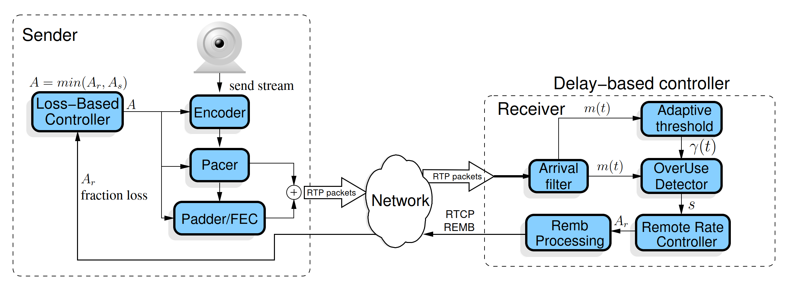

GCC算法主要分成两个部分，一个是基于丢包的拥塞控制，一个是基于延迟的拥塞控制。该算法有两个版本的实现。
- 版本一，接收端实现基于延迟的拥塞控制算法，发送端实现基于丢包的拥塞控制。称为
REMB-GCC。 - 版本二，基于丢包和基于延迟的拥塞控制都在发送端实现，接收端仅定时向发送端反馈收包情况。称为
TFB-GCC。

上图是 REMB-GCC 的算法框图。接收端对延时梯度进行估计，计算预估带宽后通过 REMB RTCP包反馈给发送端；发送端基于丢包率进行带宽评估，最终结合接收端反馈的带宽选择较小值作为最终带宽，用来调整发送端编码器编码带宽，FEC 和 pacing 带宽及重传包的带宽。
基于延迟梯度的带宽估计
到达时间滤波器根据RTP包的到达时延和发送间隔，计算出延迟变化；通过卡尔曼滤波（Kalman filter）对延迟变化做平滑以消除网络噪音带来的误差，预测出延迟的梯度；由过载检测器根据阈值和延迟变化，判断当前网络的状态是正常、低负载、过载，其中阈值会自适应调整；根据网络状态的变化，码率控制器根据一个带宽估计公式计算带宽估计值；最后通过RTMB包传送给发送端。
到达时间滤波器
以 RTP 传输的包，每帧可能被分成多个 RTP 包发送，每个发送的 RTP 包携带了一个 RTP 扩展，称为 abs-send-time 扩展，记录了发送端精确的发包时间，避免发送端延迟给网络传播延迟的估计带来误差；接收端在接收每个 RTP 包时，也会记录该包的到达时间。RTP扩展如下：
1 | 0 1 2 3 |
abs_send_time以秒为单位，共3字节，格式是6.18定点描述，每64s溢出环绕，分辨率为3.8 us，在 1Gbps 接口上发出的每 477 字节增加一个增量。NTP时间戳用64位表示，格式32.32，转换公式为abs_send_time_24 = (ntp_timestamp_64 >> 14) & 0x00ffffff。
WebRTC 不是单纯的测量单个数据包彼此之间的延迟梯度，而是将数据包按发送时间间隔和到达时间间隔分组，计算组间的整体延迟梯度。分组规则是发送时间间隔小于5ms的数据包被归为一组，原因为：
- 发送端的pacer模块调度方式也是5ms一次发送多个数据包。
- wifi网络下存在短暂的信道中断现象，造成数据包的堆积，造成数据包burst（爆发式发送）。
到达时间滤波器的目的是估计单向时延梯度 ，这里采用 kalman 滤波根据测得的单向时延梯度 估计得到：
上图 和 是两个数据帧第一个数据包在发送端发送的时间， 和 是两个数据帧最后一个数据包在接收端接收的时间。相邻两帧的接收时间差和发送时间差之间的间隔，也即一帧在网络中传输时间的变化，称为单向延时梯度：
理想的网络传输， 应该为 0。如果网络发生拥塞， 时刻发出来的包在网络中因拥塞而排队，被接收端接收需要更长的时间，此时 。如果 且越来越大，说明网络拥塞更严重，如果 但是越来越小，说明网络拥塞状况处于好转状态。
由于延迟梯度的测量精度很小，为了避免网络噪音带来的误差，Webrtc利用kalman 滤波（Kalman filter）来平滑延迟梯度的测量结果。直接测量的单向延时梯度（时延差）由以下因素产生：
两连续数据帧大小变化产生的时延 ， 表示连续两数据帧大小的变化， 表示接收第 i 帧时刻的链路容量或传输速率大小
包组排队产生的延时梯度
网络抖动或其他延时
所以延时梯度另外一个表示为：
这里将 代表单向延时梯度的模型，是一个能够测得的整体变量，但是无法区分因排队引起的时延 和传输处理引起的时延。此外认为传输时间变化 相对于排队延迟梯度 的贡献小，可以忽略。这里进行简单的建模：
这里边的 是状态噪声，零均值的高斯统计量， 是测量噪声，零均值高斯白噪声，方差分别为 论文实验中取 ，，。
从测量的单向延时梯度 估计单向延时梯度 如下：

上边卡尔曼滤波过程可以表示为：
这里递归进行更新，将过程表示为：
其中卡尔曼增益 定义为：
其中 是系统误差方差，这里每次递归进行更新：
对卡尔曼增益式子的理解为，当测量误差方差 接近零的时候，测量结果的可信度增加，卡尔曼增益增加，当误差协方差 接近零时，测量结果的可信度增加减少，卡尔曼增益减小。
测量误差方差 使用指数平均滤波器来估计，根据可变采样率进行修改：
这里 是接收最后 个数据包组的最大码率， 是滤波器系数。如果 ，取 ，因为此时发包会超出通道限制， 就不一定是高斯白噪声了。
在基于延时的带宽估计中, 使⽤ kalman 滤波器对输入样本进行估计，但只用到了网络队列延时变化这⼀个指标。还可以估计网络抖动，在 video jitter buffer 中就使用同样的方法进行了网络抖动的估计。基于延时带宽估计只用了包在网络队列排队延时的变化这⼀个指标，没有用抖动。而 jitter buffer 中只用kalman 滤波器估算抖动。
过载检测器
每接收到视频帧 ，过载检测器都会产生一个信号 s，基于延迟梯度 和阈值 驱动码率控制器有限状态机的状态 。
到达时间滤波器计算出每组数据包的延迟梯度 之后，通过和阈值 比较，判断当前的网络拥塞状态。
- ，说明网络网络拥塞队列在增大，如果拥塞持续时间大于 100ms，网络过载
- ，说明网络拥塞队列在变小，拥塞情况在改善，网络低负载
- ，网络正常
这样计算的依据是，网络发生拥塞时，数据包会在中间网络设备中排队等待转发，这会造成延迟梯度的增长，当网络流量回落时，网络设备快速消耗（转发）其发送队列中的数据包，而后续的包排队时间更短，这时延迟梯度减小或为负值。
在实际WebRTC的实现中，虽然每个数据包组的到达都会触发这个探测过程，但是使用的 这个值并不是直接使用每组数据到来时的计算值，而是将这个值放大了60倍。这么做的目的可能是 这个值通常情况下很小，理想网络下基本为0，放大该值可以使该算法不会因为太灵敏而波动太大。
自适应阈值
理想状况下，网络的延迟梯度是0，实际的网络中，不同转发路径的延迟梯度有波动且波动大小不同。如果设置阈值固定的太大可能无法探测到拥塞，太小导致算法对 的变化很敏感，过度检测器会频繁检测到过载信号，导致基于时延的控制器会因为这个时延变化不断减小预测的带宽。实验中显示固定的阈值，GCC由于TCP流（TCP是基于丢包的拥塞控制）的时延产生大量的过载信号，导致有限状态机总是调低发送码率，最终导致GCC码率耗尽，即在和TCP流的竞争中，GCC流量出现饥饿现象。WebRTC使用了一种自适应的阈值调节算法：
其中 表示两组包计算延时梯度的时间差，每组数据包会触发一次探测，同时更新一次阈值，这里 的意义就是距上次更新阈值时的时间间隔。 是一个变化率，增长的基值是：当前的延迟梯度和上一个阈值的差值：
其中 能够阈值可以快升慢降。当网络处于正常状态时，阈值会以一个较小的变化率减小，当处于过载或低负载时，阈值会以一个相对大一点的变化率增大。
码率控制器
码率控制维护一个状态机，根据过载探测器输出的信号，估算基于延迟梯度的网络速率 。

有限状态机的目标是最小化端到端路径上缓冲区中的排队延迟。当网络拥塞时，估计的单向延迟梯度 变为正值，过载检测器触发overuse信号，状态机处于 Decrase状态，应该降低发送码率，降低为过去 $500 ms$ 时间窗口内的最大 acked_bitrate的0.85倍；当网络中排队的数据包被快速释放时，直到估计的单向延迟梯度 变为负值，过载检测器触发underuse信号，状态机进入hold状态；直到缓冲区被清空， 接近0，网络平稳，过载检测器触发normal信号，状态机进入increase状态，开始探测是否可以增加发送码率。码率的调整根据以下式子：
其中 。
REMB包处理
接收端根据码率控制器确定好新的最大接收码率值后，通过 RTCP REMB RR报文反馈给发送端，REMB报文如下：
1 | 0 1 2 3 |
REMB报文反馈消息类型（FMT）为 15；有效载荷类型（PT）为 206；发送端的 SSRC、媒体源 SSRC, 一般为 0 ；Unique identifier是 REMB 报文的特殊标识，固定为 0x52454D42；BR Exp 和 BR Mantissa 共同表示反馈的最大码率值，Exp 表示指数部分，Mantissa 表示尾数部分。SSRC feedback 表示发送端发送的流的 SSRC 列表。
REMB 报文一般是每 1s 反馈一次，当检测到可用带宽小于上次预估的 97% 时则会立刻反馈，目的是快速降低，平稳上升。
通过SDP属性实现：
1 | a=rtcp-fb:<payload type> goog-remb |
基于丢包的带宽估计
基于延时的算法通过监测网络延时的趋势来估测可用带宽，仅在网络路径上的缓存队列比较大的时候才比较可靠，如果缓存队列比较小，那么可以根据丢包来察觉是否过载。基于丢包的算法则是应对已经发生拥塞情况的紧急措施。在物理链路中，大量丢包通常发生于路由器缓冲区填满时，这时必须减少发送数据包以使网络链路恢复。
发送端的基于丢包的带宽预估思想依据丢包数量来评估网络拥塞程度，目的是：当延迟估计模块带宽没有及时调整发送端带宽，拥塞还存在时，能够基于丢包来调整带宽。丢包越多，表明网络越拥塞，因此需要降低发送码率以减轻网络拥塞；而如果没有丢包，则网络状况良好，可以增加发送码率，探测更多可用带宽。该算法实现的关键在于获取接收端的丢包率，并确定降低和提升发送码率的阈值。
当丢包率大于 10% 时认为拥塞，此时应该主动降低发送码率减少拥塞，丢包率越高带宽降的越多，最大为原来的50%。当丢包率小于 2% 时认为网络状况较好，可以适当向上提高5%的带宽，探测是否有更多带宽可用；当丢包率介于 2% ~ 10% 时认为网络状况一般，保持当前码率不变，这样可以避免一些网络固有的丢包被错判为网络拥塞而导致降低码率，而这部分的丢包则需要通过其他的如NACK或FEC等手段来恢复。
发送端解析接收端发过来的 RTCP RR 报文的lost fraction字段来判断丢包，它描述了从上一次 RR 报文发送后到本次 RR 报文期间的丢包率。
发送端模块
发送端最终的带宽将结合丢包调整的带宽和 REMB 反馈过来的带宽，取两者中较小的值：。
参考
A Google Congestion Control Algorithm for Real-Time Communication draft-ietf-rmcat-gcc-02
持续精进 | GCC 动态带宽评估算法分析与优化
小议WebRTC拥塞控制算法：GCC介绍
webrtc（1）——拥塞控制算法original GCC
LearningWebRTC: 拥塞控制
WebRTC GCC 拥塞控制算法（REMB-GCC）
Google Congestion Control Algorithm